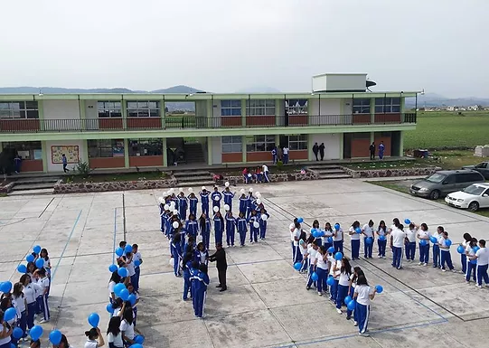
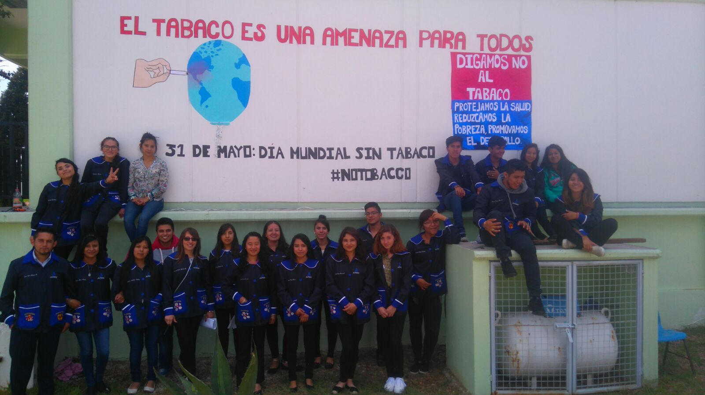

Licenciatura en Pedagogía
MODALIDAD: Presencial,En linea, Semipresencial.
CIUDAD: Toluca, México.
DURACIÓN: 8 semestres.

Licenciatura en Pedagogía
MODALIDAD: Presencial.
CIUDAD: Acambay, México.
DURACIÓN: 8 semestres.

Licenciatura en Pedagogía
MODALIDAD: Presencial.
CIUDAD: Jilotepec, México.
DURACIÓN: 8 semestres